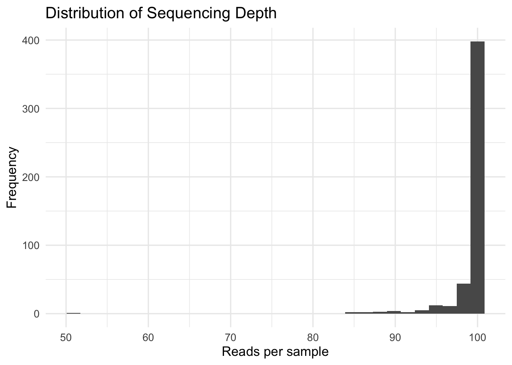
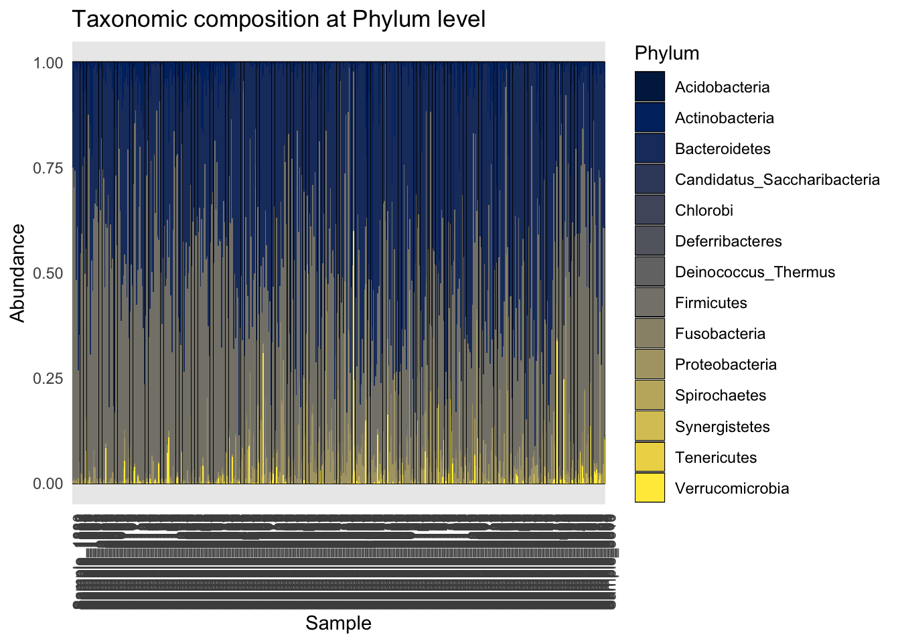
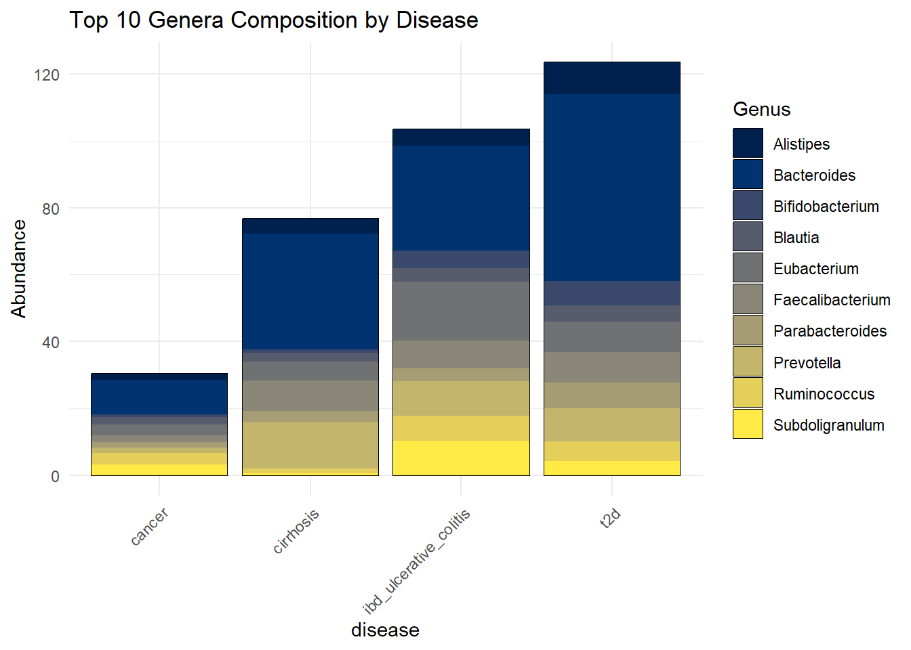
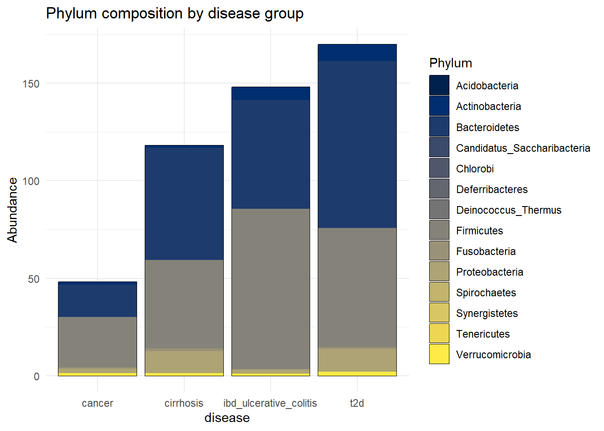
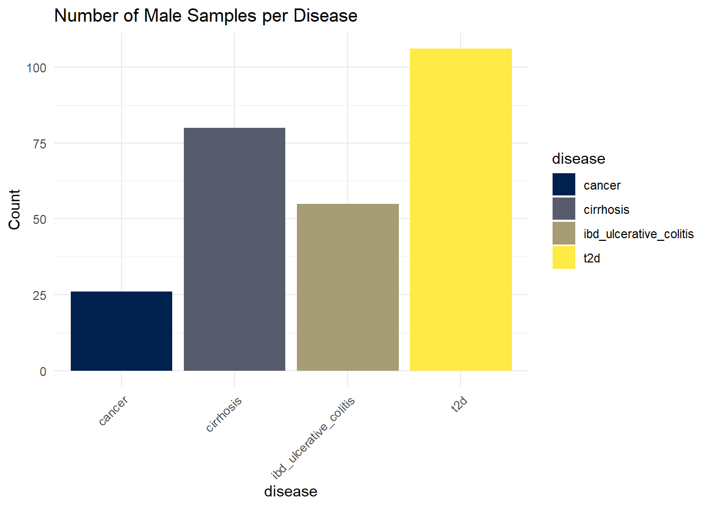

Show code
summary(metagenomics) Length Class Mode
1 phyloseq S4 Before performing metagenomic analyses, it is important to explore and clean the dataset. This step includes:
These exploratory analyses help detect potential issues in the dataset and provide an overview of the microbial communities before more advanced statistical analyses.
In this section, users can load their own dataset by downloading our repository on github.
The workflow expects:
- an OTU abundance table,
- a taxonomy table,
- and a sample metadata table.
All three tables are stored in an Excel file and imported separately using their sheet names. You can replace the file path and sheet names below with your own dataset, by loading your data in the M1_metagenomics/data and navigating to the following file M1_metagenomics/functions/inputData.R to update the data.
file_path <- here("data", "dataset_MISO_project.xlsx")
otu_sheet <- "OTU_table"
tax_sheet <- "Taxonomy"
sample_sheet <- "Sample_data"
otu_mat <- read_excel(file_path, sheet = otu_sheet)
tax_mat <- read_excel(file_path, sheet = tax_sheet)
samples_df <- read_excel(file_path, sheet = sample_sheet)The imported tables are converted into a phyloseq object. phyloseq is a R package for microbiome analysis that allows abundance data, taxonomy, and sample metadata to be stored together in a single structured object.
This makes it easier to perform analyses and visualize the microbial data.
otu_mat <- otu_mat %>% tibble::column_to_rownames("OTU_ID")
tax_mat <- tax_mat %>% tibble::column_to_rownames("Tax_ID")
samples_df <- samples_df %>% tibble::column_to_rownames("Sample_ID")
otu_mat <- as.matrix(otu_mat)
tax_mat <- as.matrix(tax_mat)
OTU <- otu_table(otu_mat, taxa_are_rows = TRUE)
TAX <- tax_table(tax_mat)
samples <- sample_data(samples_df)
metagenomics <- phyloseq(OTU, TAX, samples)A first summary of the dataset provides general information about:
- the number of samples,
- the number of taxa,
- sequencing depth,
- and metadata variables available for analysis.
This helps verify that the dataset was imported correctly.
summary(metagenomics) Length Class Mode
1 phyloseq S4 The dataset is stored as a phyloseq S4 object, a R class designed to integrate abundance, taxonomy, and metadata into one object.
typeof(otu_mat)[1] "double"We can verify that the OTU table is stored as a numeric matrix of type double, meaning the abundance values are represented as decimal numbers.
We also checked whether some samples contained only zero values. Such samples can be problematic because they do not contain any detected microbial signal and may affect analyses, if they do exist, we should consider ignoring those samples.
which(colSums(otu_mat != 0) == 0)named integer(0)summary(colSums(otu_mat)) Min. 1st Qu. Median Mean 3rd Qu. Max.
101.8 199.1 199.9 198.2 200.0 200.0 No sample composed only of zeroes was found.
Missing values can bias analyses and lead to incorrect statistical results. We therefore verify that the OTU table, taxonomy table, and sample metadata do not contain missing entries before continuing the analysis. is.na() is used to deal with missing values in the dataset. In order to check missing values, we can sum up the number of missing values of each table and if the sum equals 0, then there are no missing values.
# Check for missing values
sum(is.na(otu_mat))[1] 0sum(is.na(tax_mat))[1] 0sum(is.na(samples_df))[1] 0colSums(is.na(samples_df)) dataset_name bodysite disease
0 0 0
age gender country
0 0 0
sequencing_technology pubmedid
0 0 We can see that there are no missing values.
Sequencing depth corresponds to the total number of reads obtained for each sample.
Large differences in sequencing depth may introduce technical bias in diversity analyses. Samples with extremely low read counts are sometimes removed because they may not accurately represent the microbial community.
sample_depth <- sample_sums(metagenomics)
summary(sample_depth) Min. 1st Qu. Median Mean 3rd Qu. Max.
50.91 99.57 99.94 99.09 100.00 100.00 bp_seq_depth <- ggplot(data.frame(depth = sample_depth), aes(x = depth)) +
geom_histogram(bins = 30) +
labs(title = "Distribution of Sequencing Depth",
x = "Reads per sample",
y = "Frequency")
bp_seq_depth
ggsave(here("figures", "dataPrep", "sample_sum.pdf"), bp_seq_depth)Saving 7 x 5 in imageSequencing depth across samples is fairly consistent, with most samples summing to approximately 100, indicating that the dataset had been probably normalized to relative abundances.
However, we can notice one potential outlier, a sample exhibiting a lower total (50.91), let’s try to identify it.
sample_sums(metagenomics)[sample_sums(metagenomics) < 90]Sample_2148 Sample_2280 Sample_2516 Sample_3079 Sample_3482 Sample_3493
89.41782 84.62723 86.69817 89.79545 50.90540 85.95933
Sample_3504 Sample_3519 Sample_3526 Sample_3553 Sample_3594
88.59328 84.47117 88.53511 87.91809 89.17386 Most samples show similar sequencing depth values, confirming that the dataset was already normalized before analysis.
One sample (Sample_3482) exhibits a lower sequencing depth than the others. However, since the difference remains moderate, the sample was retained for the study.
Taxonomic composition plots allow visualization of the relative abundance of microbial groups across samples.
These representations help identify dominant bacterial taxa and observe potential differences between disease groups or other metadata categories.
metagenomics_phylum <- tax_glom(metagenomics, taxrank = "Phylum")
metagenomics_phylum_per <- transform_sample_counts(metagenomics_phylum, function(x) x / sum(x))
Tax_phyllum <- plot_bar(metagenomics_phylum_per, fill = "Phylum") +
geom_bar(stat = "identity") +
theme_minimal() +
labs(title = "Taxonomic composition at Phylum level") +
theme(axis.text.x = element_blank())
Tax_phyllum
ggsave(here("figures", "dataPrep", "Tax_phyllum.pdf"), Tax_phyllum)Saving 7 x 5 in imageTax_disease_group <- plot_bar(metagenomics_phylum_per, x = "disease", fill = "Phylum") +
geom_bar(stat = "identity", position = "stack") +
theme_minimal() +
labs(title = "Phylum composition by disease group")
Tax_disease_group
ggsave(here("figures", "dataPrep", "Tax_disease_group.pdf"), Tax_disease_group)Saving 7 x 5 in imageIt seems that the most present phylum are Bacteroidetes and Actinobacteria, for all diseases.
To improve readability, only the 10 most abundant genera were retained in the following visualization.
metagenomics_genus <- tax_glom(metagenomics, taxrank = "Genus")
metagenomics_genus_per <- transform_sample_counts(metagenomics_genus, function(x) x / sum(x))
# keep top 10 genera to avoid clutter
top_genera <- names(sort(taxa_sums(metagenomics_genus_per), decreasing = TRUE))[1:10]
metagenomics_genus_top <- prune_taxa(top_genera, metagenomics_genus_per)
Top10b_disease <- plot_bar(metagenomics_genus_top, x = "disease", fill = "Genus") +
geom_bar(stat = "identity", position = "stack") +
theme_minimal() +
labs(title = "Top 10 Genera Composition by Disease") +
theme(axis.text.x = element_text(angle = 45, hjust = 1))
Top10b_disease
ggsave(here("figures", "dataPrep", "Top10b_disease.pdf"), Top10b_disease)Saving 7 x 5 in imageWe observe that Bacteroides, a genus within the Bacteroidetes phylum, is the most abundant genus across all disease groups in the dataset. This confirms the high abundance of the Bacteroidetes phylum in these samples.
Let’s analyze some distributions of samples by gender. Strong imbalance between groups may influence statistical interpretation and reduce the reliability of comparisons.
meta_df <- data.frame(sample_data(metagenomics))
gender_counts <- meta_df %>%
group_by(gender) %>%
summarise(Count = n()) %>%
mutate(Percentage = Count / sum(Count) * 100)
print(gender_counts)# A tibble: 2 × 3
gender Count Percentage
<chr> <int> <dbl>
1 female 217 44.8
2 male 267 55.2gender_counts <- meta_df %>%
group_by(gender) %>%
summarise(Count = n())
# Plot
Sample_dist_gender <- ggplot(gender_counts, aes(x = gender, y = Count, fill = gender)) +
geom_bar(stat = "identity") +
theme_minimal() +
labs(title = "Number of Samples by Gender",
x = "Gender",
y = "Number of Samples")
Sample_dist_gender
ggsave(here("figures", "dataPrep", "Sample_dist_gender.pdf"), Sample_dist_gender)Saving 7 x 5 in imageWe observe that 44.8% of the samples are female and 55.2% are male, indicating a slightly higher representation of males. However, the distribution remains relatively balanced between the two groups.
meta_df <- data.frame(sample_data(metagenomics))
disease_counts <- meta_df %>%
summarise(Count = n(), .by = c(gender, disease))
SampleF_dist_disease <- ggplot(disease_counts %>% filter(gender == "female"),
aes(x = disease, y = Count, fill = disease)) +
geom_bar(stat = "identity") +
theme_minimal() +
labs(title = "Number of Female Samples per Disease") +
theme(axis.text.x = element_text(angle = 45, hjust = 1))
SampleF_dist_disease
ggsave(here("figures", "dataPrep", "SampleF_dist_disease.pdf"), SampleF_dist_disease)Saving 7 x 5 in imageUlcerative colitis (IBD) has the highest number of samples with more than 75 counts, followed by type 2 diabetes (T2D), then cirrhosis, and finally cancer, which has fewer than 25 counts.
SampleM_dist_disease <- ggplot(disease_counts %>% filter(gender == "male"),
aes(x = disease, y = Count, fill = disease)) +
geom_bar(stat = "identity") +
theme_minimal() +
labs(title = "Number of Male Samples per Disease") +
theme(axis.text.x = element_text(angle = 45, hjust = 1))
SampleM_dist_disease
ggsave(here("figures", "dataPrep", "SampleM_dist_disease.pdf"), SampleM_dist_disease)Saving 7 x 5 in imageType 2 diabetes (T2D) has the highest number of samples with more than 100 counts, followed by type cirrhosis, then Ulcerative colitis (IBD), and finally cancer, which has around 25 counts.
We can see that there are differences in the number of samples per disease, depending on gender.
Let’s analyze the distribution of samples by country.
country_counts <- meta_df %>%
group_by(country) %>%
summarise(Count = n()) %>%
mutate(Percentage = Count / sum(Count) * 100)
print(country_counts)# A tibble: 3 × 3
country Count Percentage
<chr> <int> <dbl>
1 china 288 59.5
2 france 48 9.92
3 spain 148 30.6 country_counts <- meta_df %>%
group_by(country) %>%
summarise(Count = n())
Sample_dist_country<- ggplot(country_counts, aes(x = country, y = Count, fill = country)) +
geom_bar(stat = "identity") +
theme_minimal() +
labs(title = "Number of Samples by Country",
x = "Country",
y = "Number of Samples")
Sample_dist_country
ggsave(here("figures", "dataPrep", "Sample_dist_country.pdf"), Sample_dist_country)Saving 7 x 5 in imageWe can see that 59.5% of the samples are from China, 30.6% from Spain and only 9.92% from France, indicating a higher representation of samples from China, followed by Spain and then a very small percentage of samples are from France.
disease_counts_country <- meta_df %>%
group_by(country, disease) %>%
summarise(Count = n(), .groups = "drop")
plot_data <- disease_counts_country %>%
ungroup() %>%
tidyr::complete(country, disease, fill = list(Count = 0))
Sample_dist_country_disease <- ggplot(plot_data, aes(x = disease, y = Count, fill = disease)) +
geom_bar(stat = "identity") +
facet_wrap(~country) +
theme_minimal() +
labs(
title = "Number of samples per disease by Country",
x = "Disease",
y = "Number of samples"
) +
theme(axis.text.x = element_text(angle = 45, hjust = 1), panel.border = element_rect(color = "black", fill = NA, linewidth = 1), panel.spacing = unit(0, "lines")
)
Sample_dist_country_disease
ggsave(here("figures", "dataPrep", "Sample_dist_country_disease.pdf"), Sample_dist_country_disease)Saving 7 x 5 in imageWe can observe that there is no country with total complete data on every disease. Indeed, for China, there are samples for cirrhosis and type 2 diabetes only, for France, there are solely samples for cancer and for Spain, we only have the samples for ulcerative colitis (ibd).
There was a lot of variation when finding the distribution of samples by country of origin and disease. This imbalance should be kept in mind in all analyses.
The taxonomic composition at the class level was compared between genders using relative abundance profiles. Only the most abundant classes (top 10) were retained to improve visualization clarity.
metagenomics_class <- tax_glom(metagenomics, taxrank = "Class")
metagenomics_class_per <- transform_sample_counts(metagenomics_class, function(x) x / sum(x))
top_classes <- names(sort(taxa_sums(metagenomics_class_per), decreasing = TRUE))[1:10]
metagenomics_class_top <- prune_taxa(top_classes, metagenomics_class_per)
B10class_dist_gender <- plot_bar(metagenomics_class_top, x = "gender", fill = "Class") +
geom_bar(stat = "identity", position = "stack") +
theme_minimal() +
labs(title = "Bacterial TOP 10 Classes Distribution by Gender") +
theme(axis.text.x = element_text(angle = 45, hjust = 1))
B10class_dist_gender
ggsave(here("figures", "dataPrep", "B10class_dist_gender.pdf"), B10class_dist_gender)Saving 7 x 5 in imageThe same analysis but with all bacterial classes
Bclass_dist_gender <- plot_bar(metagenomics_class, x = "gender", fill = "Class") +
geom_bar(stat = "identity", position = "stack") +
theme_minimal() +
labs(title = "Bacterial Class Distribution by Gender") +
theme(axis.text.x = element_text(angle = 45, hjust = 1))
Bclass_dist_gender
ggsave(here("figures", "dataPrep", "Bclass_dist_gender.pdf"), Bclass_dist_gender)Saving 7 x 5 in imageIt seems that the bacterial distribution is approximately the same for each gender.
Overall, the data preparation step provided a clear overview of the dataset and ensured its suitability for the study. We examined key characteristics such as sample distribution across disease groups and gender, revealing a slight imbalance in both cases (more male samples than female, and varying representation across conditions).
These checks helped confirm data quality, identify potential biases, and ensure that the analyses are interpreted in the right context.
#To save all the data/graphs for the presentation
save(metagenomics, B10class_dist_gender, Bclass_dist_gender, bp_seq_depth, Sample_dist_gender, SampleF_dist_disease, SampleM_dist_disease, Tax_disease_group, Tax_phyllum, Top10b_disease, Sample_dist_country, Sample_dist_country_disease, file = here::here("posts", "datapreparation.RData"))# sessioninfo::session_info(pkgs = "attached")
print_session_info()R version 4.5.3 (2026-03-11 ucrt)
Platform: x86_64-w64-mingw32/x64
Running under: Windows 11 x64 (build 26200)
Matrix products: default
LAPACK version 3.12.1
locale:
[1] LC_COLLATE=French_France.utf8 LC_CTYPE=French_France.utf8
[3] LC_MONETARY=French_France.utf8 LC_NUMERIC=C
[5] LC_TIME=French_France.utf8
time zone: Europe/Paris
tzcode source: internal
attached base packages:
[1] stats graphics grDevices utils datasets methods base
other attached packages:
[1] patchwork_1.3.2 gridExtra_2.3 pairwiseAdonis_0.4.1
[4] cluster_2.1.8.2 FSA_0.10.1 broom_1.0.12
[7] lubridate_1.9.5 forcats_1.0.1 stringr_1.6.0
[10] purrr_1.2.1 readr_2.2.0 tidyverse_2.0.0
[13] knitr_1.51 SpiecEasi_1.99.0 igraph_2.2.2
[16] vegan_2.7-3 permute_0.9-10 tibble_3.3.1
[19] tidyr_1.3.2 dplyr_1.2.0 viridis_0.6.5
[22] viridisLite_0.4.3 ggplot2_4.0.3 phyloseq_1.54.2
[25] readxl_1.4.5 here_1.0.2
loaded via a namespace (and not attached):
[1] rlang_1.1.7 magrittr_2.0.4 ade4_1.7-24
[4] otel_0.2.0 compiler_4.5.3 mgcv_1.9-4
[7] systemfonts_1.3.2 vctrs_0.7.2 reshape2_1.4.5
[10] pkgconfig_2.0.3 shape_1.4.6.1 crayon_1.5.3
[13] fastmap_1.2.0 backports_1.5.1 XVector_0.50.0
[16] ellipsis_0.3.2 labeling_0.4.3 utf8_1.2.6
[19] rmarkdown_2.31 sessioninfo_1.2.3.9000 tzdb_0.5.0
[22] ragg_1.5.2 xfun_0.57 glmnet_4.1-10
[25] cachem_1.1.0 jsonlite_2.0.0 biomformat_1.38.3
[28] huge_1.5.1 VGAM_1.1-14 parallel_4.5.3
[31] R6_2.6.1 stringi_1.8.7 RColorBrewer_1.1-3
[34] pkgload_1.5.1 cellranger_1.1.0 Rcpp_1.1.1
[37] Seqinfo_1.0.0 iterators_1.0.14 usethis_3.2.1
[40] IRanges_2.44.0 Matrix_1.7-4 splines_4.5.3
[43] timechange_0.4.0 tidyselect_1.2.1 rstudioapi_0.18.0
[46] yaml_2.3.12 codetools_0.2-20 pkgbuild_1.4.8
[49] lattice_0.22-9 plyr_1.8.9 Biobase_2.70.0
[52] withr_3.0.2 S7_0.2.1 evaluate_1.0.5
[55] survival_3.8-6 Biostrings_2.78.0 pillar_1.11.1
[58] foreach_1.5.2 stats4_4.5.3 generics_0.1.4
[61] rprojroot_2.1.1 S4Vectors_0.48.0 hms_1.1.4
[64] scales_1.4.0 glue_1.8.0 pulsar_0.3.13
[67] tools_4.5.3 data.table_1.18.2.1 fs_2.0.1
[70] grid_4.5.3 ape_5.8-1 devtools_2.5.0
[73] nlme_3.1-168 cli_3.6.5 textshaping_1.0.5
[76] gtable_0.3.6 digest_0.6.39 BiocGenerics_0.56.0
[79] htmlwidgets_1.6.4 farver_2.1.2 memoise_2.0.1
[82] htmltools_0.5.9 multtest_2.66.0 lifecycle_1.0.5
[85] MASS_7.3-65